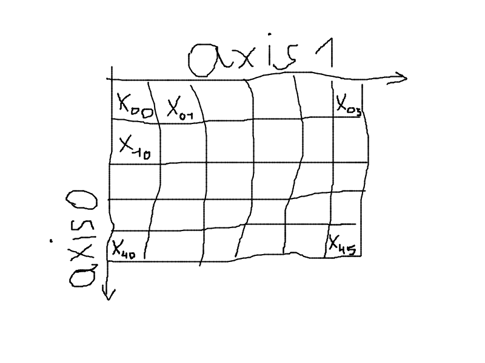
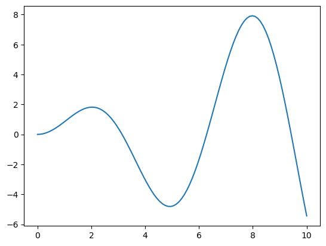
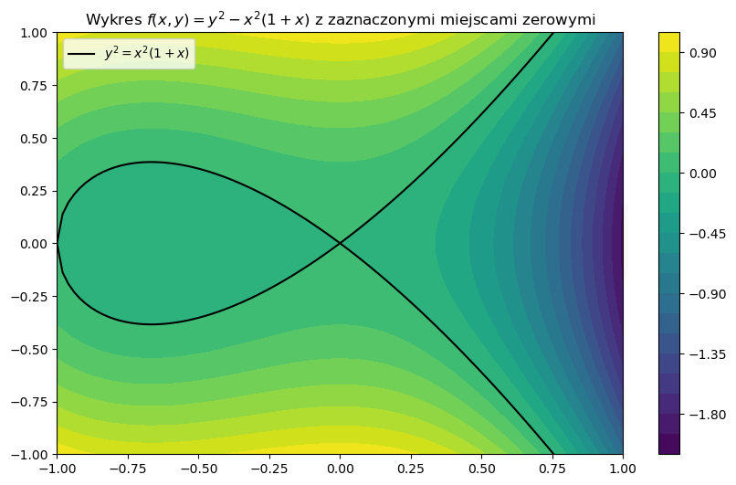
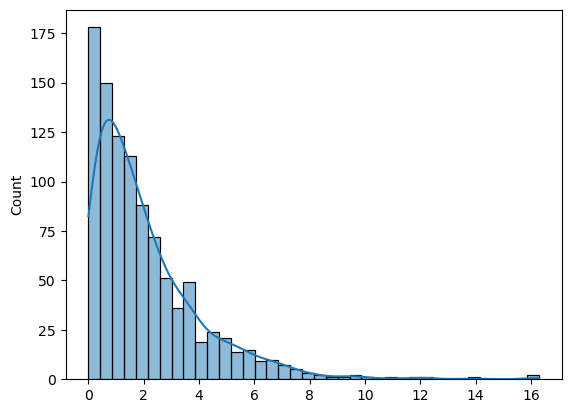
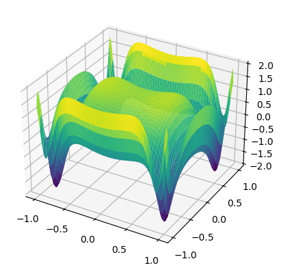

import numpy as npWykład 1: NumPy
Biblioteki Python w analizie danych

NumPy
Dokumentacja: https://numpy.org/doc/stable/
Biblioteka do przetwarzania numerycznego dużych wielowymiarowych tablic liczbowych. Dostarcza typ ndarray (homogeniczna tablica wielowymiarowa), mechanizmy indeksowania, wektoryzacji i broadcastingu oraz zestaw funkcji do algebry liniowej.
Typowy import:
1. Tablica ndarray
Czym jest ndarray
Główny typ definiowany przez bibliotekę NumPy.
- Reprezentuje jedno lub wielowymiarową tablicę wartości. Jest to podstawowa klasa definiowana przez bibliotekę.
- Wszystkie wartości w tablicy muszą być tego samego typu, czyli
np.ndarrayjest tablicą jednorodną (homogeniczną). - Każda wartość zajmuje tę samą określoną przez typ porcję pamięci.
np.array()
Tworzy tablice z “tablicopodobnych” obiektów, np. z list:
a = np.array([[1, 2, 3], [7, 8, 9]])
aarray([[1, 2, 3],
[7, 8, 9]])dtype
Wspólny typ dla wszystkich wartości w tablicy:
a = np.array([1, 2, 3])
a.dtypedtype('int64')a = np.array([1.5, 2, 3.14])
a.dtypedtype('float64')NumPy: typy wbudowane
| Data type | Description |
|---|---|
| bool_ | Boolean (True or False) stored as a byte |
| int_ | Default integer type (same as C long; normally either int64 or int32) |
| intc | Identical to C int (normally int32 or int64) |
| intp | Integer used for indexing (same as C ssize_t; normally either int32 or int64) |
| int8 | Byte (-128 to 127) |
| int16 | Integer (-32768 to 32767) |
| int32 | Integer (-2147483648 to 2147483647) |
| int64 | Integer (-9223372036854775808 to 9223372036854775807) |
| uint8 | Unsigned integer (0 to 255) |
| uint16 | Unsigned integer (0 to 65535) |
| uint32 | Unsigned integer (0 to 4294967295) |
| uint64 | Unsigned integer (0 to 18446744073709551615) |
| float_ | Shorthand for float64. |
| float16 | Half precision float: sign bit, 5 bits exponent, 10 bits mantissa |
| float32 | Single precision float: sign bit, 8 bits exponent, 23 bits mantissa |
| float64 | Double precision float: sign bit, 11 bits exponent, 52 bits mantissa |
| complex_ | Shorthand for complex128. |
| complex64 | Complex number, represented by two 32-bit floats |
| complex128 | Complex number, represented by two 64-bit floats |
Atrybuty tablic
.ndim– liczba wymiarów, liczba całkowita..shape– rozmiar każdego z wymiarów, krotka liczb całkowitych..size– całkowita liczba wartości, iloczyn wartości z krotki.shape.

2. Tworzenie tablic
Tablice stałe
Tablice stałe to tablice, które mają wszystkie elementy ustawione na tę samą wartość. NumPy dostarcza kilka funkcji do tworzenia takich tablic:
np.zeros()— tworzy tablicę wypełnioną zerami.np.ones()— tworzy tablicę wypełnioną jedynkami.np.full()— tworzy tablicę o określonym kształcie, wypełnioną podaną wartością.np.eye()— generuje macierz, w której elementy na głównej przekątnej są jedynkami, a pozostałe zerami.np.identity()— zwraca kwadratową macierz jednostkową (tożsamościową).np.*_like()— funkcje (np.np.zeros_like(),np.ones_like(),np.full_like()) tworzą tablice o tym samym kształcie i typie danych, co podana tablica, ale wypełnione zerami, jedynkami lub inną wartością.
Argument shape
Podane wyżej funkcje, jak i wiele innych generujących tablice, przyjmują argument shape (czasem size, np. np.random.normal()), który określa kształt tablicy wynikowej.
Pouczającym ćwiczeniem jest próba własnej implementacji funkcji generującej tablicę w postaci listy list o zadanym kształcie. Oto przykład implementacji funkcji np.full():
def f(shape, fill=0):
'''Zwraca tablicę o kształcie shape wypełnioną wartością fill.'''
if len(shape) == 0:
return fill
else:
a, *q = shape
return a * [f(q, fill)]Oczywiście, w praktyce nie ma potrzeby implementowania takich funkcji, ponieważ NumPy dostarcza gotowe, zoptymalizowane implementacje. Tym niemniej tego typu zadania stanowią dobry trening zdolności programistycznych.
Tablice z danych
np.array()— Konwertuje dane wejściowe (np. listy, krotki) na tablicę ndarray.np.asarray()— Podobnie jaknp.array(), ale nie kopiuje danych, gdy już są tablicą NumPy.np.copy()— Tworzy głęboką kopię tablicy, co zapewnia niezależność oryginału i kopii.np.fromfile()— Wczytuje dane binarne z pliku, tworząc z nich tablicę.np.fromfunction()— Generuje tablicę na podstawie funkcji, która jest wywoływana dla każdego indeksu.np.fromiter()— Tworzy tablicę z dowolnego iterowalnego obiektu, np. generatora.np.fromstring()— Konwertuje dane zawarte w łańcuchu znaków na tablicę, dzieląc tekst według separatorów.np.loadtxt()— Ładuje dane tekstowe z pliku do tablicy, przydatne przy pracy z danymi zapisanymi w formacie tekstowym.
Tablice zakresów liczbowych
np.arange()— Generuje tablicę z wartościami o stałym kroku, podobnie jak funkcjarange(), ale zwraca obiektndarray.np.linspace()— Zwraca tablicę z określoną liczbą równomiernie rozmieszczonych wartości w zadanym przedziale.np.logspace()— Tworzy tablicę wartości rozmieszczonych równomiernie na skali logarytmicznej.np.geomspace()— Generuje tablicę wartości rozmieszczonych równomiernie w skali geometrycznej (iloczynowo).np.meshgrid()— Tworzy siatkę współrzędnych na podstawie podanych wektorów; umożliwia przygotowanie danych do wizualizacji lub obliczeń na wielowymiarowych funkcjach.
Użycie np.linspace() do generowania punktów na wykresie
Funkcje rysujące wykresy, np. matplotlib.pyplot.plot() czy seaborn.lineplot(), pobierają współrzędne punktów z tablic dla poszczególnych osi. Zatem jeśli chcemy narysować wykres funkcji na płaszczyźnie, to musimy dostarczyć dwie tablice: jedną ze współrzędnymi x, drugą ze współrzędnymi y. Funkcja np.linspace() pozwala na wygodne generowanie tablicy 1D z równomiernie rozmieszczonymi punktami na zadanym przedziale. W ten sposób możemy wygenerować tablicę z punktami na osi x, a następnie obliczyć wartości funkcji dla tych punktów i zapisać je w tablicy z punktami na osi y.
from matplotlib import pyplot as plt
%matplotlib inline
# Rysujemy wykres funkcji f(x) = x * sin(x)
n = 100 # liczba argumentów funkcji
x = np.linspace(0, 10, n) # generujemy n równo rozmieszczonych punktów na odcinku [0, 10]
y = x * np.sin(x) # obliczamy wartości funkcji f w tych punktach
plt.plot(x, y); # rysujemy wykres

Użycie np.meshgrid() do generowania siatki punktów
Aby narysować wykres funkcji \(z=f(x,y)\) na płaszczyźnie postępujemy podobnie jak w przypadku rysowania wykresu funkcji jednej zmiennej. Tym razem jednak potrzebujemy tablic z punktami na osi x i y oraz tablicę z wartościami funkcji dla tych punktów. Do wygenerowania tablic argumentów x i y możemy użyć funkcji np.linspace() i np.meshgrid(). Funkcja np.meshgrid() przyjmuje jako argumenty dwie tablice z punktami na osi x i y, a zwraca dwie tablice 2D, w których elementy to współrzędne punktów.
Dokładniej działa to tak: jeśli x to tablica z punktami na osi x, a y to tablica z punktami na osi y, to X, Y = np.meshgrid(x, y) zwraca dwie tablice X i Y takie, że * X[i, j] to x[j], * Y[i, j] to y[i].
Gdy mamy X i Y, to możemy obliczyć wartości Z wstawiając X i Y do f(): Z = f(X, Y).
Demonstracja działania np.meshgrid() na przykładzie funkcji \(f(x,y)=xy\) w prostokącie \([1,4]\times[1,3]\):
x = [1, 2, 3, 4]
y = [1, 2, 3]
X, Y = np.meshgrid(x, y)
Z = X*Y
print(X)
print(Y)
print(Z)
[[1 2 3 4]
[1 2 3 4]
[1 2 3 4]]
[[1 1 1 1]
[2 2 2 2]
[3 3 3 3]]
[[ 1 2 3 4]
[ 2 4 6 8]
[ 3 6 9 12]]Wykres konturowy funkcji \(f(x,y)=y^2-x^2(1+x)\) w prostokącie \([-1,1]\times[-1,1]\):
from matplotlib import pyplot as plt
%matplotlib inline
N = 100 # N**2 punktów na wykresie
x = np.linspace(-1, 1, N)
y = np.linspace(-1, 1, N)
X, Y = np.meshgrid(x, y)
Z = Y**2 - X**2*(1 + X)
fig, ax = plt.subplots(figsize=(10, 6))
cs = ax.contourf(X, Y, Z, levels=20, cmap='viridis')
fig.colorbar(cs)
ax.plot(x, x*np.sqrt(1 + x), 'black', label='$y^2 = x^2(1 + x)$')
ax.plot(x, -x*np.sqrt(1 + x), 'black')
ax.set(
xlim=(-1, 1),
ylim=(-1, 1),
title='Wykres $f(x, y) = y^2 - x^2(1 + x)$ z zaznaczonymi miejscami zerowymi'
)
ax.legend();

Wartości losowe
Uwaga: Od NumPy 1.17 zalecanym sposobem generowania liczb losowych jest nowe API oparte na generatorach. Zamiast np.random.function() używamy obiektu Generator:
rng = np.random.default_rng(seed=42) # powtarzalność wyników
rng.integers(0, 10, size=5) # zamiast np.random.randint()
rng.random(size=5) # zamiast np.random.random()
rng.standard_normal(size=5) # zamiast np.random.randn()
rng.choice([1, 2, 3], size=2) # zamiast np.random.choice()
array([3, 2])Stare API (np.random.randint(), np.random.randn(), …) nadal działa, ale nowe jest zalecane ze względu na lepszą kontrolę stanu generatora i lepsze właściwości statystyczne (domyślny generator PCG64 zamiast Mersenne Twister).
Proste tablice wartości losowych
Wybrane metody generatora:
rng.integers(low, high, size)— Losowe liczby całkowite z przedziału \([\text{low}, \text{high})\).rng.random(size)— Wartości z rozkładu jednostajnego na \([0,1)\).rng.standard_normal(size)— Wartości z rozkładu normalnego \(\mathcal{N}(0,1)\).rng.choice(a, size, replace, p)— Losowy wybór elementów z tablicya.
Losowa zmiana porządku
rng.shuffle()— Miesza elementy tablicy „w miejscu” (in-place).rng.permutation()— Zwraca nową tablicę będącą losową permutacją elementów podanej tablicy. Jeśli podamy liczbę, funkcja wygeneruje permutację liczb od 0 do \(n-1\), nie modyfikując oryginalnych danych.rng.permuted()— Działa podobnie jakpermutation(), zwracając nową, permutowaną kopię tablicy, pozostawiając oryginał nietkniętym.
Rozkłady
rng.normal(loc, scale, size)— Rozkład normalny (Gaussa) o zadanej średniej i odchyleniu standardowym.rng.uniform(low, high, size)— Rozkład jednostajny na zadanym przedziale.rng.exponential(scale, size)— Rozkład wykładniczy o zadanym parametrze.rng.poisson(lam, size)— Rozkład Poissona o zadanym parametrze \(\lambda\).rng.binomial(n, p, size)— Rozkład dwumianowy o zadanym prawdopodobieństwie sukcesu i liczbie prób.- itp.
import seaborn as sns
rng = np.random.default_rng(seed=0)
N = 1000 ## Liczba losów
arr = rng.exponential(2, N)
sns.histplot(arr, kde=True);

3. Indeksowanie
Korzysta ze zwykłej składni Pythona:
A[obj]Od rodzaju obj zależy, czy indeksowanie będzie proste, czy złożone (basic/advanced).
Indeksowanie proste
Zachodzi, gdy obj jest wycinkiem, liczbą całkowitą lub krotką wycinków i liczb całkowitych plus ewentualne Ellipsis i np.newaxis.
Kluczowe cechy:
- Zwraca widok oryginalnej tablicy, nie tworząc kopii danych.
- Umożliwia indeksowanie za pomocą liczb całkowitych lub wycinków dla każdego wymiaru.
- Operacje modyfikacji wykonane na zwróconym widoku wpływają na oryginalną tablicę.
Indeksowanie złożone
A[obj] uruchamia indeksowanie złożone, gdy: * obj jest sekwencją inną niż krotka, * obj jest tablicą NumPy o typie całkowitym lub logicznym, * obj jest krotką z przynajmniej jedną sekwencją lub tablicą NumPy o typie całkowitym lub logicznym.
Wartość zwracana podczas indeksowania złożonego jest kopią.
Indeksowanie i instrukcja przypisania
Oba rodzaje indeksowania można łączyć z instrukcją przypisania. Prowadzi to do modyfikacji oryginalnej tablicy.
A[obj] = vAle musi być możliwy broadcast v do kształtu A[obj].
Przykład: widok vs kopia
a = np.array([10, 20, 30, 40, 50])
# Indeksowanie proste (wycinki) → widok
view = a[1:4]
view[0] = 999
a # oryginał zmieniony!array([ 10, 999, 30, 40, 50])a = np.array([10, 20, 30, 40, 50])
# Indeksowanie złożone (lista indeksów) → kopia
copy = a[[1, 2, 3]]
copy[0] = 999
a # oryginał niezmienionyarray([10, 20, 30, 40, 50])4. Wektoryzacja i broadcasting
Wektoryzacja
Wektoryzacja polega na zastąpieniu jawnych pętli Pythona operacjami NumPy wykonywanymi na całych tablicach. Dzięki temu kod jest szybszy (operacje realizowane w skompilowanym C) i bardziej czytelny.
# Porównanie: suma kwadratów elementów tablicy
a = np.arange(1_000_000, dtype=np.float64)%%timeit
# Pętla Pythona
total = 0.0
for x in a:
total += x * x84.7 ms ± 1.55 ms per loop (mean ± std. dev. of 7 runs, 10 loops each)%%timeit
# Wektoryzacja NumPy
np.sum(a ** 2)1.34 ms ± 117 μs per loop (mean ± std. dev. of 7 runs, 1,000 loops each)W tym przykładzie wersja wektoryzowana jest wyraźnie szybsza niż pętla Pythona.
Broadcasting
Operowanie na tablicach o różnych kształtach.
Reguły broadcastingu
- Jeśli dwie tablice różnią się wymiarem, to kształt tej o mniejszym wymiarze jest uzupełniany od lewej jedynkami.
- Jeśli rozmiary na danej osi nie są w obu tablicach równe, to ten który jest równy jeden, jest rozszerzany do większego rozmiaru.
- Jeśli rozmiary na danej osi nie są w obu tablicach równe i żaden z nich nie jest równy jeden, to broadcasting nie może zostać wykonany. Wtedy rzucany jest wyjątek.
Zadanie
Na których kształtach da się wykonać broadcasting?
(1, 2)i(3, 4, 2)(1, 2)i(3, 2, 4)(5, 3, 8)i(5, 4, 8)(5, 3, 8)i(5, 8)(5, 3, 8)i(3, 8)(5, 3, 8)i(5, 3)
Przykład
Wykres funkcji \(z=\sin(\exp(2x^2)) + \sin(\exp(2y^2))\) w kwadracie \([-1, 1]\times[-1, 1]\):
x = np.linspace(-1, 1, 500)
y = np.linspace(-1, 1, 500)[:, np.newaxis]
z = np.sin(np.exp(2*x**2)) + np.cos(np.exp(2*y**2))from matplotlib import pyplot as plt
fig = plt.figure()
ax = fig.add_subplot(111, projection='3d')
ax.plot_surface(x, y, z, cmap='viridis');
np.tile()
Funkcja np.tile() służy do tworzenia nowej tablicy przez powtarzanie istniejącej tablicy określoną liczbę razy wzdłuż każdego wymiaru. Pozwala na “kafelkowanie” (tiling) danych w uporządkowany sposób.
Składnia podstawowa:
A = np.array([[1, 2], [3, 4]])
reps = (2, 3) # powtórz 2 razy wzdłuż pierwszego wymiaru i 3 razy wzdłuż drugiego
np.tile(A, reps)array([[1, 2, 1, 2, 1, 2],
[3, 4, 3, 4, 3, 4],
[1, 2, 1, 2, 1, 2],
[3, 4, 3, 4, 3, 4]])Gdzie: - A to tablica wejściowa (lub skalar) - reps to liczba powtórzeń (pojedyncza liczba lub krotka określająca liczbę powtórzeń w każdym wymiarze)
# Powtórz 1D tablicę 3 razy
a = np.array([1, 2, 3])
np.tile(a, 3)array([1, 2, 3, 1, 2, 3, 1, 2, 3])# Powtórz tablicę 2 razy wzdłuż pierwszego wymiaru i 3 razy wzdłuż drugiego
np.tile(a, (2, 3))array([[1, 2, 3, 1, 2, 3, 1, 2, 3],
[1, 2, 3, 1, 2, 3, 1, 2, 3]])Porównanie z broadcastingiem: np.tile() tworzy jawne kopie danych w pamięci, podczas gdy broadcasting operuje na widokach — w wielu przypadkach broadcasting jest więc bardziej efektywny pamięciowo niż np.tile().
5. Funkcje agregujące, łączenie i dzielenie tablic
Funkcje agregujące
np.sum()— Sumuje wartości w tablicy.np.min(),np.max()— Znajduje wartość minimalną lub maksymalną.np.mean()— Oblicza średnią arytmetyczną.np.median()— Znajduje medianę.np.std()— Oblicza odchylenie standardowe.np.var()— Oblicza wariancję.- i wiele innych …
Łączenie i dzielenie tablic
np.concatenate()— Łączy tablice wzdłuż zadanego wymiaru.np.vstack()— Łączy tablice wzdłuż pierwszego wymiaru.np.hstack()— Łączy tablice wzdłuż drugiego wymiaru.np.split()— Dzieli tablicę na podtablice.np.vsplit()— Dzieli tablicę wzdłuż pierwszego wymiaru.np.hsplit()— Dzieli tablicę wzdłuż drugiego wymiaru.
6. Algebra liniowa (np.linalg)
Operacje macierzowe
np.dot()— Oblicza iloczyn skalarny lub mnożenie macierzy w zależności od wymiarów wejściowych.np.linalg.multi_dot()— Wydajnie oblicza iloczyn kilku macierzy, optymalizując kolejność mnożeń.np.vdot()— Liczy iloczyn wektorowy, traktując argumenty jako spłaszczone tablice (dla liczb zespolonych sprzęga pierwszy argument).np.inner()— Zwraca sumę iloczynów odpowiadających sobie elementów dwóch tablic.np.outer()— Oblicza iloczyn zewnętrzny dwóch wektorów, tworząc macierz.np.matmul()oraz operacja@— Wykonują mnożenie macierzy, obsługując zarówno operacje na macierzach 2D, jak i na tablicach o wyższych wymiarach.np.linalg.matrix_power()— Podnosi kwadratową macierz do zadanej potęgi przez kolejne mnożenia.
Równania liniowe
np.linalg.solve()— Rozwiązuje układ równań liniowych \(Ax = b\) dla macierzy kwadratowej \(A\), zwracając wektor \(x\).np.linalg.tensorsolve()— Rozwiązuje równanie liniowe, w którym macierz \(A\) jest zastąpiona przez tensor, przy odpowiednim określeniu osi.np.linalg.lstsq()— Znajduje rozwiązanie układu równań metodą najmniejszych kwadratów, przydatne przy układach nadokreślonych lub niedookreślonych.np.linalg.inv()— Oblicza macierz odwrotną dla danej macierzy kwadratowej, jeśli taka istnieje.np.linalg.pinv()— Wyznacza macierz pseudoodwrotną (Moore-Penrose).np.linalg.tensorinv()— Oblicza odwrotność tensora poprzez reinterpretację wielowymiarowej tablicy jako macierzy, z uwzględnieniem odpowiedniego rozbicia indeksów.
Przykład: rozwiązywanie układu równań
Rozwiązujemy układ \(Ax = b\):
\[\begin{cases} 2x + y = 5 \\ x + 3y = 7 \end{cases}\]
A = np.array([[2, 1],
[1, 3]])
b = np.array([5, 7])
x = np.linalg.solve(A, b)
xarray([1.6, 1.8])# Weryfikacja: A @ x powinno dać b
A @ xarray([5., 7.])Przykład: pseudoodwrotność (układ nadokreślony)
Gdy mamy więcej równań niż niewiadomych, np.linalg.lstsq() znajduje rozwiązanie w sensie najmniejszych kwadratów:
# 3 równania, 2 niewiadome (układ nadokreślony)
A = np.array([[1, 1],
[1, 2],
[1, 3]])
b = np.array([1, 2, 2])
x, residuals, rank, sv = np.linalg.lstsq(A, b, rcond=None)
xarray([0.66666667, 0.5 ])Podsumowanie
W tym wykładzie omówiliśmy bibliotekę NumPy, która stanowi fundament ekosystemu naukowego Pythona. Najważniejsze zagadnienia to:
- Typ
ndarray— homogeniczna tablica wielowymiarowa o ustalonymdtype. - Tworzenie tablic — z danych, ze stałych, z zakresów liczbowych, z
meshgrid. - Indeksowanie — proste (widoki) vs złożone (kopie); kluczowe rozróżnienie przy modyfikacji danych.
- Wektoryzacja — operacje na tablicach zamiast pętli (rzędy wielkości szybsze).
- Broadcasting — reguły dopasowywania kształtów tablic w operacjach arytmetycznych.
- Algebra liniowa (
np.linalg) — mnożenie macierzy, rozwiązywanie układów równań, pseudoodwrotność.
Ćwiczenia
Utwórz tablicę 5×5 wypełnioną kolejnymi liczbami od 1 do 25. Wyodrębnij z niej podmacierz 3×3 środkowych elementów za pomocą wycinków. Sprawdź, czy wynik jest widokiem.
Bez użycia pętli, znormalizuj każdą kolumnę macierzy
A(rozmiar \(m \times n\)) tak, aby miała średnią 0 i odchylenie standardowe 1. Wskazówka: użyj broadcastingu iaxis=0.Dana jest macierz \(A\) rozmiaru \(3\times 2\) i wektor \(b\) długości 3. Znajdź wektor \(x\) rozwiązujący układ \(Ax \approx b\) w sensie najmniejszych kwadratów. Zweryfikuj wynik, porównując
A @ xzb.